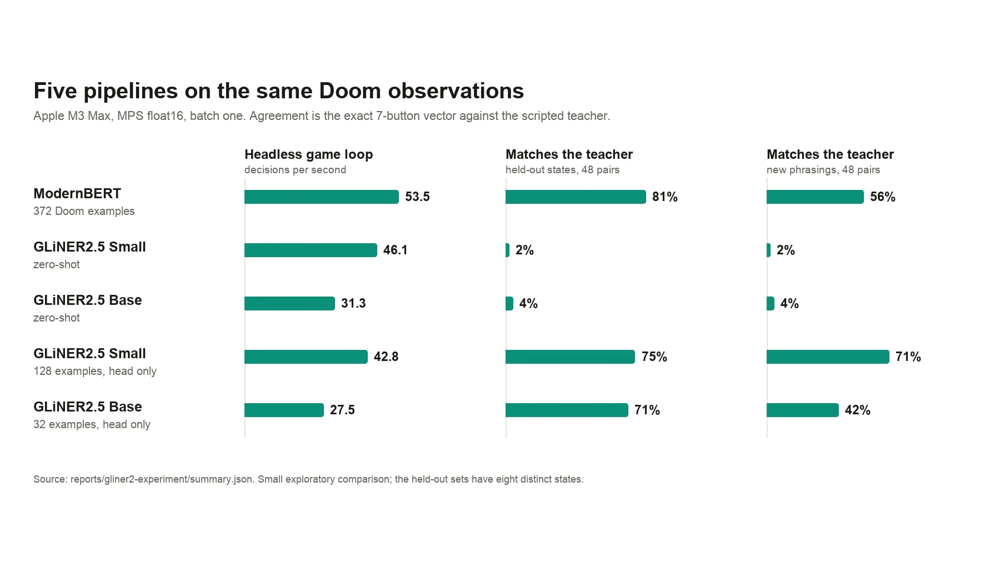
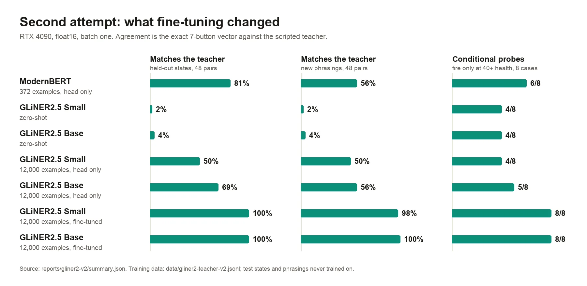

reports/gliner2-experiment/ (first attempt) or reports/gliner2-v2/ (second).1 · The question
September 19 · five pipelines, one set of observations
The ModernBERT policy needed 372 labelled Doom examples to learn its seven button scores. GLiNER2.5 is built to classify text against labels supplied at run time, so it can be handed descriptions of Doom actions and asked which apply, with no Doom training at all. Could it play? And if a little training helped, how little?
Each pipeline scored the same 516 evaluation pairs and played six 20-game-second headless runs: three instructions (attack, evade, cautious) on two seeds, 2,100 live decisions per pipeline.
The pipelines
- ModernBERT with its trained head (372 examples), the reference
- GLiNER2.5 Small and Base, zero-shot
- GLiNER2.5 Small and Base with their classification layers adapted on a few examples
The setup
- Apple M3 Max, PyTorch 2.14, Metal (MPS) float16, batch one
- Same observations and legal-action decoder for every pipeline
- GLiNER inputs are 227–253 tokens with the action descriptions; ModernBERT's are 25–36
What counts
- Speed: the whole classification, and the headless game loop
- Agreement: the exact seven-button vector against the scripted teacher
- Behaviour: kills, deaths, ammo and stillness in the live runs
2 · Speed
September 19 · complete pipelines, not equal-length kernels
| Pipeline | Doom examples | Per classification | Headless loop |
|---|---|---|---|
| ModernBERT | 372 | 12.0 ms | 53.5 decisions/s |
| GLiNER2.5 Small | 0 | 15.8 ms | 46.1 decisions/s |
| GLiNER2.5 Base | 0 | 24.4 ms | 31.3 decisions/s |
| GLiNER2.5 Small, adapted head | 128 | 14.6 ms | 42.8 decisions/s |
| GLiNER2.5 Base, adapted head | 32 | 23.5 ms | 27.5 decisions/s |
Classification covers building the text, tokenizing, the complete encoder, moving scores to the CPU and decoding; loading and ten warm-up calls are excluded. The headless loop includes the game, logs and screenshots, and is total decisions over total wall time. All averages stayed above the 17.5 decisions per second that two tics per decision need at native game speed, although one adapted-Base cautious run fell below it.
On the CPU (float32, four threads), Small averaged 36.6 ms and Base 74.9 ms. CPU and Metal scores differed by at most 0.00062 and 0.00223, with identical first decisions, so the weaknesses below are not a float16 artefact.
3 · What it did in the game
September 19 · zero-shot responsiveness, and its limits
On an identical healthy state with ammo and an enemy lined up, zero-shot Base's ATTACK score fell from 0.976 for “Attack enemies on sight.” to 0.022 for “Do not shoot. Evade the enemies.” Its evasion runs used no ammo, and it reacted to where enemies were, although it chose right turns inconsistently.
| Kills / deaths, two seeds × 20 game seconds | Attack | Evade | Cautious |
|---|---|---|---|
| ModernBERT | 18 / 0 | 0 / 0 | 9 / 1 |
| Small, zero-shot | 9 / 4 | 0 / 4 | 0 / 4 |
| Base, zero-shot | 8 / 3 | 0 / 1 | 21 / 1 |
| Small, 128 examples | 14 / 1 | 0 / 0 | 0 / 0 |
| Base, 32 examples | 19 / 1 | 0 / 0 | 0 / 0 |
Kills and deaths are not a full measure of skill, and these are short runs. Zero-shot Base scored more cautious kills than ModernBERT, but that does not show reliable conditional behaviour; the probes in chapter 5 test that directly.
4 · A little training
September 19 · heads only, 32 to 372 examples
Both GLiNER sizes were tried with 32, 128 and 372 training examples, keeping the encoder frozen and adapting only the existing classification layers, 600 steps each with the same settings. The smallest budget reaching the best validation agreement went on to gameplay: 128 for Small and 32 for Base. The original whole-state splits were kept, and the test sets chose nothing.
| Exact agreement with the teacher | Held-out states, 48 pairs | New phrasings, 48 pairs |
|---|---|---|
| ModernBERT | 81.25% | 56.25% |
| Small, zero-shot | 2.08% | 2.08% |
| Base, zero-shot | 4.17% | 4.17% |
| Small, 128 examples | 75.00% | 70.83% |
| Base, 32 examples | 70.83% | 41.67% |
Head optimisation took 0.75–1.19 seconds per Small budget and 1.79–2.95 seconds per Base budget, plus 8.46 and 13.89 seconds of shared feature extraction. Both adapted heads moved and survived both evasion runs without firing.
5 · Conditional instructions
September 19 · “fire only when health is at least 40”
“Shoot at enemies, but retreat when health falls below 40” never forbids firing while retreating. To remove that ambiguity, a follow-up tested the explicit known phrasing “Fight, but stop shooting and retreat below 40 health” and one new phrasing, at health 20, 39, 40 and 80, with no model or threshold changed.
The health categories already split at 40, so these probes test the vocabulary, not general numerical reasoning. Neither approach establishes arbitrary instruction following.
6 · First verdict
September 19 · what the first comparison supported

reports/gliner2-experiment/summary.json.7 · Why the first attempt fell short
October 6 · reading the first attempt's data and training
Three things limited the first attempt, and none of them was GLiNER itself.
The data could not show the rule
- The 468 controlled pairs only ever said health 10, 30 or 100
- Nothing near 40, so “retreat below 40” had no boundary to learn
- Ammunition was always 0 or 10
Too few situations
- 62 distinct training states, at most 372 examples
- One fixed bearing and one distance per enemy category
- Two phrasings per instruction
A frozen encoder
- Only the small classification layers were adapted
- The encoder's features were never trained to combine the instruction with the state
- So “retreat below 40” had to be read off features that did not represent it
8 · Better data from the same teacher
October 6 · 12,000 labelled examples, nothing hand-labelled
The scripted teacher can label any state, so the second attempt generated them
(teacher_data.py). Each sample draws a health value from 1 to 100, half of them near the 20 and 40
boundaries; ammunition from 0 to 50, empty a quarter of the time; and an enemy that is absent or to the left,
ahead or right, at a random bearing and distance within its range category. The teacher labels every state for
all three behaviours, and each label is paired with one of five or six training phrasings: 4,000 states, 12,000
examples, plus 1,200 for validation.
9 · Fine-tuning the whole model
October 6 · an RTX 4090, minutes per model
Training runs through GLiNER's own scoring path, the same calls as inference without inference mode, so the model is trained on exactly the text and labels it scores at play time; a check confirmed the two paths give identical logits. Three epochs, batch 32, AdamW, bfloat16; the checkpoint is chosen on the held-out validation states. To separate the effect of better data from the effect of fine-tuning, the same data also trained only the classification layers with the encoder frozen.

reports/gliner2-v2/summary.json).| Pipeline | Trained | Training | Test states | New phrasings | Conditional | Per decision |
|---|---|---|---|---|---|---|
| ModernBERT, 372 examples | head | 3.6 s | 81.2% | 56.2% | 6 / 8 | 9.6 ms |
| GLiNER2.5 Small, zero-shot | — | — | 2.1% | 2.1% | 4 / 8 | 12.6 ms |
| GLiNER2.5 Base, zero-shot | — | — | 4.2% | 4.2% | 4 / 8 | 12.1 ms |
| Small, 12,000 examples | head, 0.3M | 63 s | 50.0% | 50.0% | 4 / 8 | 12.6 ms |
| Base, 12,000 examples | head, 1.2M | 109 s | 68.8% | 56.2% | 5 / 8 | 12.3 ms |
| Small, 12,000 examples | all, 73.9M | 111 s | 100% | 97.9% | 8 / 8 | 12.8 ms |
| Base, 12,000 examples | all, 193.6M | 232 s | 100% | 100% | 8 / 8 | 12.5 ms |
Both fine-tuned models passed all 12 behaviour checks, and on the explicit conditional probes, “Fight, but stop shooting and retreat below 40 health” and the never-trained “Fire only when your health is at least 40. If lower, do not fire and move backward.”, they held fire and backed away at health 20 and 39 and fired at 40 and 80. Speed is unchanged by fine-tuning: the same encoder runs on every decision, at about 54 decisions per second headless. ModernBERT, with its 25–36-token inputs against GLiNER's 227–253, is a little faster.
10 · Playing it
October 6 · six evaluation games, then three recorded minutes
| Kills / deaths, seeds 7 and 19 × 20 game seconds | Attack | Evade | Cautious |
|---|---|---|---|
| ModernBERT | 18 / 0 | 0 / 0 | 9 / 1 |
| Small, zero-shot | 9 / 4 | 0 / 4 | 0 / 4 |
| Base, zero-shot | 8 / 3 | 0 / 1 | 21 / 1 |
| Small, head only, 12,000 examples | 0 / 0 | 0 / 3 | 0 / 0 |
| Base, head only, 12,000 examples | 9 / 0 | 0 / 2 | 0 / 3 |
| Small, fine-tuned | 20 / 0 | 0 / 0 | 19 / 0 |
| Base, fine-tuned | 20 / 0 | 0 / 0 | 19 / 0 |
The two fine-tuned sizes played identical games: both reproduce the teacher's decisions in these states, so the same actions led to the same outcomes. For the showcase, fine-tuned Base played a full 60 seconds per instruction with the dashboard on: 20 kills and 1 death attacking, no shots and 1 death evading, 17 kills and 1 death on the cautious instruction. Over 3,150 live decisions its raw button vector matched the teacher's in 2,686; every disagreement was the direction of the sideways strafe while backing away, which the text cannot always decide (an enemy “directly ahead” may be slightly left or right of the crosshair). Firing, turning and moving forward or back always matched.
live-agreement.json, conditional-base-full.json).11 · Verdict
What the two attempts support
This is imitation of a hand-written teacher from a text description of the game, so it shows instruction following within that vocabulary, not general Doom skill. The ModernBERT reference was not retrained on the new data, so the comparison shows what each pipeline reached with its own training, not which encoder is better.